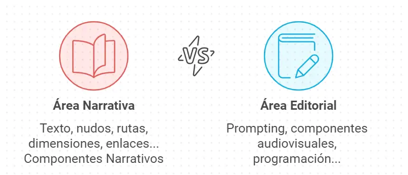
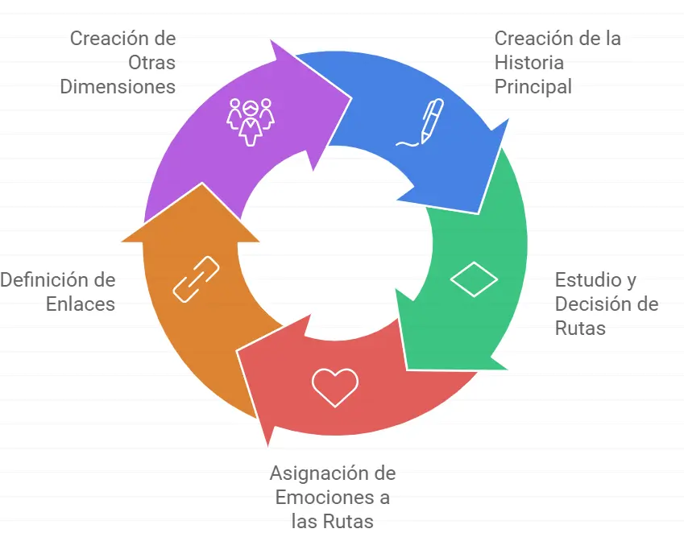
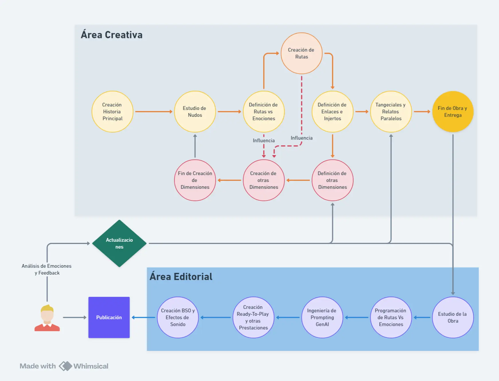

El Producto / Stringbook y Autores
Stringbook y Autores
Un nuevo concepto de Autor y Obra
La naturaleza del Selbook y de los Stringbook provocan que las Novelas ya no se puedan escribir de una manera tradicional, pero es necesario que los autores sean aún “propietarios” del argumento y de la historia. Para ello, deberán añadir "alguna capa" de información extra a sus obras.
También, la magnitud real de un Selbook que busque crear una experiencia única (lo más completa posible), hace casi imprescindible que las Obras no puedan ser creadas en su totalidad por un solo autor. Por otro lado, es incluso deseable que así sea. Pensemos que cada dimensión (protagonista elegible), tiene que tener su perspectiva e, idealmente, estilo o “voz” diferente. También hay BSO y efectos sonoros, se precisa también de conocimientos de Prompting, etc.
Por último, a la hora de “entregar la obra", el autor/es deben ser quienes provean de las diferentes emociones o decisiones que se pueden encontrar en un nudo.

Esta "especial” configuración del Stringbook y su necesaria relación con el Selbook, provoca que existan dos áreas de trabajo a la hora de preparar una obra: El Área Narrativa y el Área Editorial.
El Área Narrativa estará en manos del Autor, pero del Área Editorial podrá hacerla el mismo autor si tiene los conocimientos, podrá delegarla en su Editorial (tradicional) y, si quiere mantener su independencia, Sely y toda la Organización Selbook se pondrá a su disposición.
De estos puntos vamos a hablar en esta sección.
Área Narrativa
El Área Narrativa afecta a toda la parte argumental de la historia. Es decir: El Texto. Claro que sería posible que
una única persona fuera la responsable de la creación de un Stringbook
, pero su tarea sería titánica. Una organización o grupo bien definido podría realizar ese trabajo de manera más eficiente y rápida.
Teniendo esto en cuenta, una estructura mínima sería:
Jefe de proyecto/ideólogo
Encargado de supervisar el trabajo del conjunto y autor de la trama principal.
Supervisor de Trama
Responsable de que la historia y las rutas sean coherentes con el fin buscado.
Escritores de Ruta
Responsables de escribir las diferentes rutas que surjan de cada Nudo.
Escritores de Alternativas
Encargados de los relatos paralelos y personajes tangenciales.
Dinámica de trabajo:
Existirán mil formas de afrontar una obra de este calibre. Para un escritor no es complejo comprender la idea de "disgregar" en alternativas su idea o trama, es algo que suele atender, estudiar y decidir, con la diferencia que en un Stringbook no tiene por qué descartar ninguna opción. En este caso, actuaría como Director de Guion, dando las indicaciones a sus escritores.
La forma más orgánica de trabajo sería la creación tradicional de una novela, después, con un estudio de la obra, marcar los Nudos y definir las sub-tramas con las emociones relacionadas, relatos paralelos, etc.. Él o sus Escritores de Ruta se encargarán de la narración alternativa.
Al finalizar la narración de esa dimensión y con el conocimiento global de la historia, será más sencillo la creación de otras dimensiones (protagonistas).

La dinámica de trabajo podría ser:
- Creación de la Historia Principal.
- Estudio y decisión de Rutas/nudos.
- Asignación de Emociones relacionadas a las Rutas.
- Definición de enlaces o injertos (es decir, puntos donde esas rutas vuelven a conectar con la historia principal).
- Creación del resto de Dimensiones, con el conocimiento e influencia de la historia principal.
Imaginemos que el autor cuenta la historia de un chico, Tom, que con su amigo Sam se van de viaje en coche. Al llegar a una gasolinera, al autor se le ocurrió introducir un nuevo Personaje, Mary. El autor decide que este punto es un Nudo Subliminal. Su propuesta podría ser la siguiente:
- Ruta 1, Escritor Ruta A: Si al Lector le gusta Mary, pero sospecha de ella, discute con Sam, Sam desaparece y Tom y Mary siguen juntos... A demás de otras indicaciones o tramas y con un objetivo definido, por ejemplo: ven a un camión y deciden seguirlo pensado que Sam va allí. El enlace ocurre en el bosque.
- Ruta 2, Escritor Ruta B: Si al lector no le gusta Mary, pero presiente que a Sam sí le gusta, siguen los tres juntos, hacemos un pasaje tipo road-trip con algo de emoción, un Camión les persigue... y otras indicaciones que tenga un objetivo común con el resto de rutas.
En definitiva, con esta nueva estructura, una obra estará terminada en su parte narrativa cuando todas las rutas, dimensiones y relatos alternativos estén completos. El material que el Autor debe entregar no sólo consistirá en el texto, también debe dejar definido las emociones que quiere relacionar con cada ruta y dimensión, así como una serie de etiquetas que definan cada dimensión.
Área Editorial
Las principales Acciones que incluyen este área son:
Ingeniería de Prompting
Para definir el Prompt relacionado con cada pasaje o personaje susceptible de ser Generado por IA.
Programadores de Ruta
Encargados de realizar las conexiones y relaciones de los Nudos-Rutas.
Ingenieros de Sonido
Responsables de la BSO y de los efectos de sonido.
Existen otros tipos de tareas Editoriales que deberán estar definidas, pero estas dependerán de las Prestaciones que el autor decida que tenga su obra. Estas son:
- Punto de Salto de Dimensión
- Escenas Ready-to-Play
- Situaciones de Ventanas Dimensionales
- Charla con Protagonistas
Las acciones definidas en este área son esenciales, pero no siempre tienen por qué precisar de la acción del Autor para su definición. Si es lógico su asesoramiento, pero existirán 3 opciones a la hora de definir estos aspectos:
1. El propio autor, con su grupo de trabajo.
2. Una Editorial
3. Dejarlo en manos del Selbook.
Las opciones más viables serían dejarlo en manos de una Editorial. Tal y como ocurrió con la aparición de los libros digitales, que exigieron que las editoriales crearan departamentos concretos para la maquetación de obras digitales, tal ocurrirá también con los Selbook.
Pero existirá la opción de dejarlo en Manos del Selbook (Sello Nativo) y de Sely, para lo cual, la obra sí exigirá cierto tratamiento especial.
No son Obras, son Proyectos...
Como podemos adivinar, la Obra completa acabará cuando el Autor realmente quiera. Su "Stringbook de lanzamiento" puede contendrá la Historia o Trama principal" con diferentes ampliaciones y prestaciones, pero tanto a nivel Narrativo como Editorial, se puede seguir trabajando en ella, lanzando nuevas "extensiones", creando así una Obra cada vez más Completa. A través de Nuevas Dimensiones, nuevos Nudos, nuevas escenas de Ready-to-Play, Relatos Paralelos y de Contexto, Personajes tangenciales... la vida y venta del Stringbook no acaba cuando se llega a la palabra FIN, porque un lector de Stringbook que ya acabó la historia en diferentes rutas, es muy posible que esté interesado en vivirla a través de un nuevo Protagonista (Dimensión) que se haya habilitado, o querrá comprar la historia de un personaje Tangencial, o un Relato Paralelo...
Apoyado en los Servicios de Análisis (que veremos a continuación) que el Selbook pone a su disposición, tanto el Autor como la Editorial podrán seguir interesados en publicar nuevas actualizaciones de esa Obra y el lector seguirá pagando por ellas.
Diagrama:

📊 Servicios, Datos y Analíticas para Autores y Editoriales
Como Modelo MarketPlace, no sólo tenemos el “lado del lector", también existirá un espacio especial y completo para los Autores y Editoriales, con una serie de ventajas que, hasta hoy en día, sin impensables. Cada Autor/editorial también dispondrá de su IA Anfitriona (Sely), que le ayudará a extraer toda la información útil de los datos y análisis realizados sobre sus obras y lectores. Los autores/editores dispondrán de:
Datos y Análisis
Datos de ventas instantáneas
El Autor/editorial tendrá acceso a sus ventas de Stringbooks, Ampliaciones y Prestaciones, así como cualquier ingreso derivado de sus obras, con segmentaciones tipo de venta (stringbook, ampliaciones...), por perfiles y tipología de usuarios.
Análisis de Nudos, Rutas y Emociones
Dispondrán de un potente y profundo análisis de las rutas más leídas, decisiones más populares, las emociones relacionadas, sensibilidad de emociones, fragmentos con más impacto emocional, etc. Una forma de poder contrastar, aprender y conocer cómo se relaciona el lector con su obra.
Análisis de Emociones y Perfiles
No sólo tendrán acceso a la tipología de Perfiles más afines a sus obras, sino que en base al estudio de los Perfiles Estáticos y Dinámicos de sus obras podrán inferir que tipo de obra futura tendría una alta posibilidad de éxito, dándole recomendaciones de Géneros, épocas, temáticas, personajes, etc.
Análisis de Dimensiones y Relatos Alternativos
También existirá un análisis completo de las dimensiones (protagonistas) más elegidas, las más "emocionales”, preferencias y tendencias, análisis de emociones, así como de cualquier otro Personaje Tangencial o Relato Paralelo.
Análisis de Prestaciones y Ampliaciones
En la misma línea, tendrá acceso a la venta, tendencias y preferencias de los lectores sobre sus diferentes Prestaciones y Ampliaciones.
Análisis de Banda Sonora y efectos
Podrá conocer la percepción y gustos de los lectores sobre los componente sonoros.
Servicios:
Landing Page de Obra y de Autor
Se creará una Landing Page para cada Stringbook con toda la información de la obra y su creación. A su vez, os Autores/editores tendrán otro Micro-site con todas las obras y venta directa desde ella.
Servicios de Promoción
Si el Autor es de sello Nativo, será la Organización Selbook quien se encargue de la promoción de la obra con unos servicios mínimos que podrán ser ampliables con diferentes paquetes de pago.
Cafetería de Autor y/o Obra
El autor podrá crear su propia Cafetería en La Comunidad o crear una cafetería sobre su obra. Recordemos que es un canal tipo Discord donde podrá recoger información sobre sus lectores, así como interactuar con ellos. Podrá pedir a Sely que administre y gestione el canal.
Sistema de Actualizaciones
El autor/editorial, gracias a la información recibida en los análisis, podrá crear actualizaciones, versiones y ediciones sobre las obras ya publicadas. Por ejemplo, creando rutas nuevas, modificando la Banda sonora, abriendo una nueva dimensión, etc.
Acceso al Archivo de Experiencias de los lectores (de pago)
Los Autores/editores podrán tener acceso a la recopilación de Archivos de Experiencia de los lectores (anónimos) y podrán estudiar sus pasajes compartidos, creaciones multimedia, etc. Una información muy valiosa que podrán usar para crear sus promociones y análisis de proyectos futuros.
Propuestas Creativas de Sely
Con toda la información inferida de los datos y análisis de obras y lectores, y con el conocimiento recogido sobre el autor y su obra, Sely tendrá la capacidad de dar sugerencias muy optimizadas sobre la creación de futuras obras.
Por ejemplo, Sely puede detectar que sus lectores suelen tender hacia la intriga y menos hacia la Romantica. Que le atraen protagonistas con cierta personalidad, que las situaciones de persecución son las de mayor poder emocional, que tienen o les gusta más las historias basadas en la segunda guerra mundial… Etc. Una información increíble con la que Sely podrá proponerle la creación de una obra que englobe estos parámetros, nunca entrando en la parte creativa, pero sí en la definición de la idea: Escribe una obra sobre un Espía Aliado en la 2ªWW infiltrado en Berlin que debe descubrir los planes secretos de Hitler sobre la ocupación de Francia…